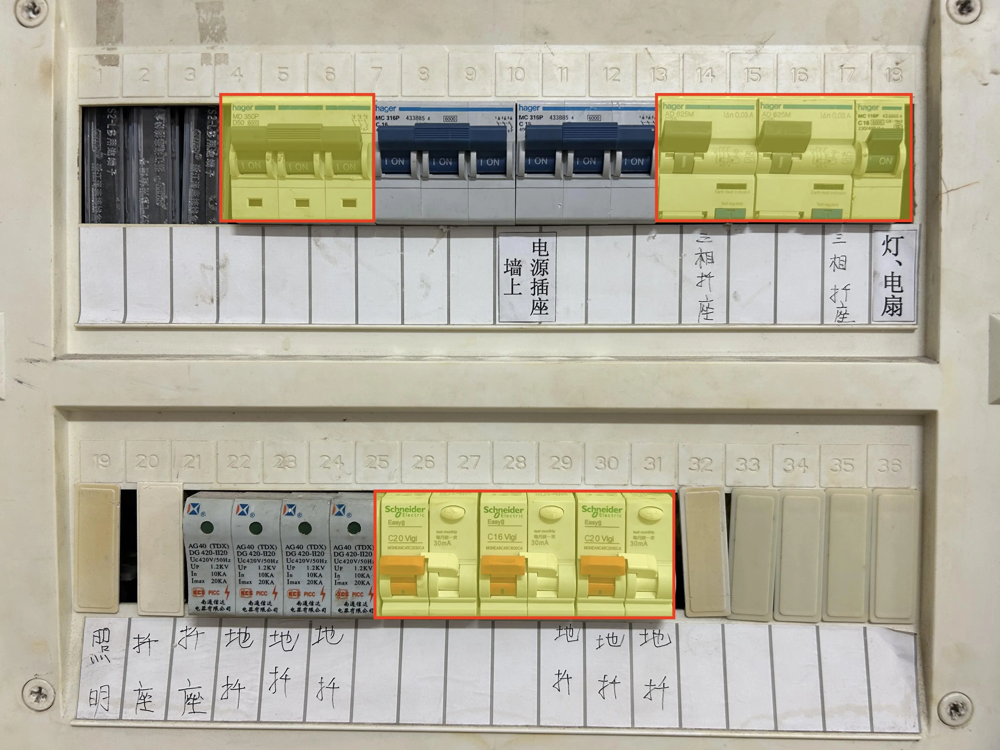

实验室上电和断电
实验室上电：
- 如下图片中的 3组开关（黄底红边），都往上拨，即上电。上电后所有开关状态如下图所示。
- 未涉及到的其他开关（2组蓝色开关），不要触碰。
实验室断电：
- 当天工作完毕不在使用实验室设备了，一定要断电。
- 如下图片中的 3组开关（黄底红边），都往下拨，即断电。
- 未涉及到的其他开关（2组蓝色开关），不要触碰。

华为昇腾开发者套件DK的开机、关机+下电
- 开发者套件如何开机、关机+下电，可参考https://www.hiascend.com/document/detail/zh/Atlas200IDKA2DeveloperKit/23.0.RC2/Hardware%20Interfaces/hiug/hiug_0004.html
- 当天工作完成后，一定要关机+下电。下电即正常关机后，拔掉开发者套件上的电源线。
- 关机：除了直接按开发者套件上的开机关机键外，还可以用 root 用户执行
shutdown -h now命令。
WiFi接入实验室局域网
- 接入点：gdmifi
- 密码：djq960423
登录局域网 Linux 服务器（即华为昇腾开发者套件） -- IP地址： 192.168.31.200
- Windows 运行 power shell，
-
在 power shell中执行命令： ssh 用户名@192.168.31.200。比如用户名是 gdv2，则：
ssh gdv2@192.168.31.200 - 按屏幕提示输入口令。输入口令时，屏幕上不显示输入的口令。
登录公网 Linux 服务器 -- IP地址： 8.147.232.81
登录方法，同登录局域网 Linux 服务器。此处从略。